Tanques de Francia
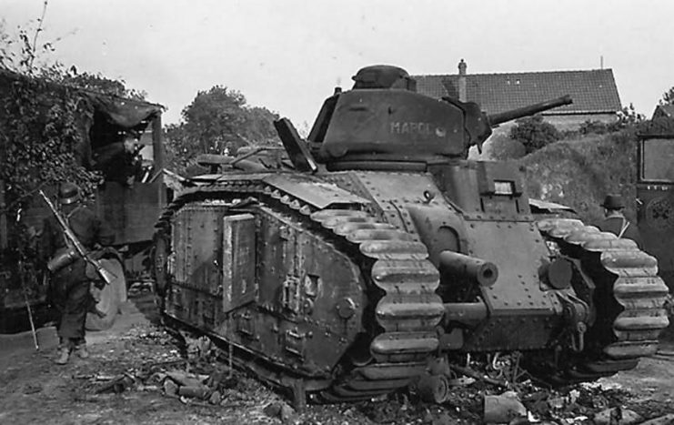
Char B1
El Char B1 era un aparato especializado en penetrar la línea de defensa enemiga. Originalmente pensado como vehículo de artillería autopropulsada con un cañón de 75 mm en el casco; luego se agregó una torreta con un cañón de 47 mm para permitirle operar como tanque y equipar a las divisiones acorazadas del arma de infantería.
- Tipo: Tanque pesado.
- Compañía: Renault.
- Tripulación: 4 (comandante/operador de radio, artillero, cargador, conductor).
- Dimenciones: Longitud 6,37 m, Anchura 2,46 m, Altura 2,79 m.
- Peso: Peso 28 t.
- Velocidad: 28 km/h.
- Armamento: Arma primaria Obús en barbilla ABS SA 35 de 75 mm, arma secundaria Cañón SA 35 47 mm, dos ametralladoras MAC M31 de 7,5 mm.
- Variantes: Char B1, Char B1 bis.
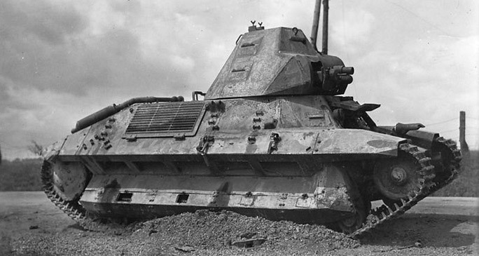
FCM 36
El FCM 36, designado Char léger modèle 1936 FCM por el Ejército Francés, fue un carro de infantería ligero producido para el Ejército Francés justo antes de la Segunda Guerra Mundial. Debido a eso, se fabricó en relativamente pocas unidades, en torno a un centenar. Se caracterizaba por su blindaje en forma piramidal y estar propulsado por un motor diésel.
- Tipo: Tanque ligero de infantería.
- Compañía: FCM.
- Tripulación: 2 (comandante, conductor).
- Dimenciones: Longitud 4,46 m, Anchura 2,14 m, Altura 2,2 m.
- Peso: Peso 12.35 t.
- Velocidad: 24 km/h.
- Armamento: Arma primaria Puteaux SA 18 de 37 mm L/21, arma secundaria Ametralladora MAC 31 de 7,5 mm.
- Armadura: Frente del casco: 40 mm, frente torreta: 40 mm, lateral torreta: 40 mm, lateral casco: 20+20 mm.
- Variantes: FCM 36.

Hotchkiss H35
A pesar de haber sido diseñado como un carro de apoyo a la infantería lento pero bien blindado, inicialmente fue rechazado por la Infantería francesa porque resultaba difícil de controlar mientras se conducía campo a través, y en su lugar fue adoptado por la Caballería en 1936.
- Tipo: Tanque ligero.
- Compañía: Hotchkiss.
- Tripulación: 2 (comandante, conductor).
- Dimenciones: Longitud 4,22 m, Anchura 1,95 m, Altura 2,15 m.
- Peso: Peso 10,6 t, 12,1 t (completamente cargado).
- Velocidad: 37 km/h.
- Armamento: Arma primaria cañón de 37 mm SA 18 o SA 38, arma secundaria ametralladora MAC mle 1931.
- Armadura: Frente del casco: 34 mm en un ángulo de 60°, frente de la torreta: 45 mm, mantelete: 25 mm, lado del casco: 29-34 mm.
- Variantes: H35, H39.
Tanques de Reino Unido
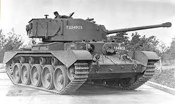
A34 Comet
Para incrementar la potencia de fuego, en el Comet se montó la nueva versión compacta del cañón de 17 libras denominada 77 mm HV en una torreta de acero fundidio y de perfil más bajo que la de su antecesor. Este arma era eficaz contra los carros alemanes de finales de la guerra, incluido el Panther a medio alcance y el Tiger. No era tan potente como el 17 libras original pero, al disparar proyectiles APDS, lograba una capacidad de penetración de blindaje superior al cañón 7,5 cm KwK 42 con munición estándar del Panther, el cual sería su equivalente alemán.
- Tipo: Tanque crucero.
- Compañía: Leyland Motors.
- Tripulación: 5 (comandante, artillero, cargador, conductor, ametrallador).
- Dimenciones: Longitud 6,55 m, Anchura 3,07 m, Altura 2,59 m.
- Peso: Peso 33,57 t,
- Velocidad: 51 km/h.
- Armamento: Arma primaria 77 mm HV de 76,2 mm, arma secundaria 2 ametralladoras Besa de 7,92 mm.
- Armadura: Frente del casco: 64 mm a 90°, frente de la torreta: 102 mm, mantelete: 102 mm.
- Variantes: A34.
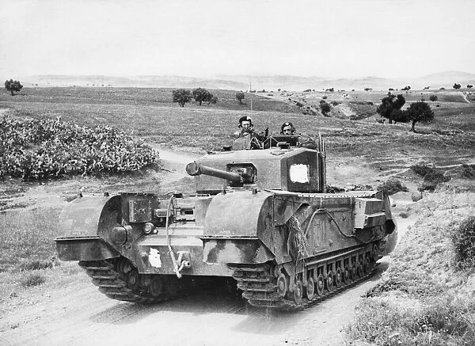
Churchill
Es conocido por su extravagante diseño con un chasis alargado apoyado en múltiples ruedas pequeñas con unas grandes orugas que rodeaban la parte superior del propio casco, dándole una apariencia larga, alta y estrecha. Era lento pero destacaba por su grueso blindaje, su capacidad para escalar pendientes pronunciadas, y su polivalencia, pues fue usado como base de muchos vehículos especializados. Fue uno de los carros de combate Aliados más pesados de la guerra.
- Tipo: Tanque pesado infanteria.
- Compañía: Vauxhall Motors y otras empresas.
- Tripulación: 5 (comandante, artillero de torre, cargador/operador de radio, conductor, artillero de casco).
- Dimenciones: Longitud 7,44 m, Anchura 2,74 m, Altura 2,49 m.
- Peso: Peso 38,5 t.
- Velocidad: 26 km/h.
- Armamento: Cañón QF 2-pdr (Mk.I y II) o QF 6-pdr (Mk.III y IV) o QF 75 mm (Mk.VI y VII) o QF 95 mm (Mk.V y VIII), arma secundaria Ametralladora Besa de 7,92 mm y obús QF 3-inch (Mk.I) o una segunda ametralladora Besa (resto de variantes).
- Armadura: Frente del casco: 89 mm, frente de la torreta: 89 m, lateral casco: 76 mm, lateral torreta: 76 mm.
- Variantes: Mk.I, Mk.II, Mk.III, Mk.IV, Mk.IV NA 75, Mk.V CS, Mk.VI, Mk.VII, Mk.VIII CS.
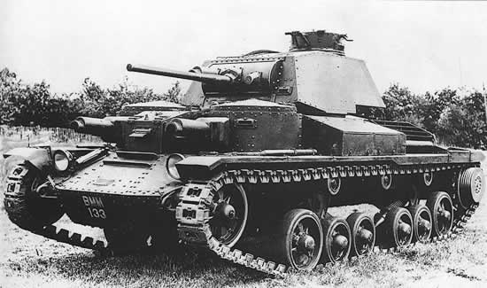
Cruiser Mk I
Fue el primer tanque de crucero: un tanque rápido diseñado para sobrepasar las líneas principales enemigas y atacar las líneas de comunicación en la retaguardia del enemigo, así como a otros carros de combate enemigos.
- Tipo: Tanque crucero.
- Compañía: Vickers, Harland & Wolff.
- Tripulación: 6 (comandante, artillero, cargador, conductor, 2 ametralldores).
- Dimenciones: Longitud 5,8 m, Anchura 2,5 m, Altura 2,65 m.
- Peso: Peso 12,2 t.
- Velocidad: 40 km/h.
- Armamento: Arma primaria Cañón QF 2-pdr de 40 mm con 100 proyectiles o Obús de 94 mm con 40 proyectiles (versión CS) , arma secundaria 3 ametralladoras Vickers de 7,7 mm.
- Armadura: Frente del casco: 14 mm, frente de la torreta: 14 mm, lado del casco: 10 mm, lado de la torreta: 12 mm.
- Variantes: Mark I (A9), Mark I CS.
Tanques de Estado Unidos
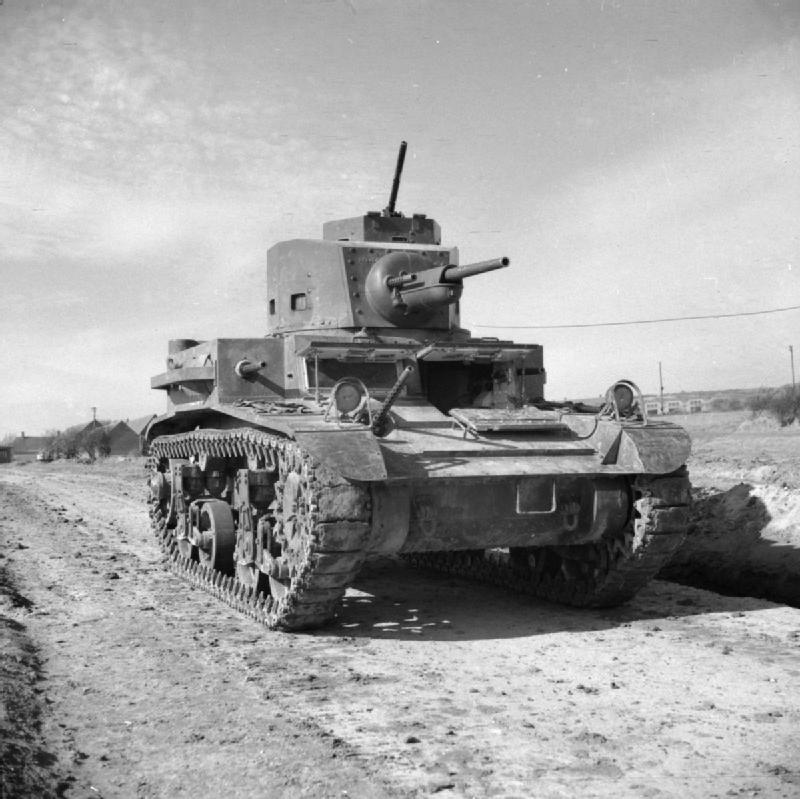
M2
El M2 fue un tanque ligero estadounidense del período de entreguerras, que fue empleado de forma limitada durante la Segunda Guerra Mundial. El modelo más común, el M2A4, estaba armado con un cañón M5 37 mm y cinco ametralladoras Browning M1919.
- Tipo: Tanque ligero.
- Compañía: Rock Island Arsenal.
- Tripulación: 4 (comandante/cargador, artillero, conductor y conductor auxiliar).
- Dimenciones: Longitud 4,43 m, Anchura 2,47 m, Altura 2,65 m.
- Peso: Peso 11,6 t.
- Velocidad: 58 km/h.
- Armamento: Arma primaria 1 x M5 37 mm, con 103 proyectiles / M2 HB de 12,7 mm, con 1.800 cartuchos, arma secundaria 5 x Browning M1919, con 8.470 cartuchos.
- Armadura: Frente del casco: 100 mm en un ángulo de 60°, glacis inferior: 100 mm en un ángulo de 30°, frente de la torreta: 100 mm (redondeado), mantelete: 120 mm (redondeado), lado del casco: 90-130 mm en 9-25 °, lado de la torreta: 90 mm en un ángulo de 20°.
- Variantes: M2A1, M2A2, M2A3, M2A4.

M3 Lee/Grant
Se trata de un diseño de transición a medio camino entre el primer carro medio estadounidense M2 Medium Tank armado con un cañón de 37 mm, y el altamente producido M4 Medium Tank (Sherman) armado con cañón de 75 mm, el M3 disponía de ambos cañones en un diseño con capacidad para siete tripulantes que no resultó muy exitoso pero que ofreció un incremento significativo de las capacidades defensivas y ofensivas a las fuerzas blindadas de los Aliados Occidentales.
- Tipo: Tanque pesado.
- Compañía: Rock Island Arsenal, Detroit Tank Arsenal, American Locomotive Company, Baldwin Locomotive Works.
- Tripulación: 7 (comandante, artillero y cargador 37 mm, artillero y cargador 75 mm, conductor y asistente del conductor) o 6 (versión Grant británica).
- Dimenciones: Longitud 5,64 m, Anchura 2,72 m, Altura 2,12 m.
- Peso: Peso 27,4 t.
- Velocidad: 34 km/h.
- Armamento: Arma primaria Cañón de 75 mm M2 o M3 (casco), cañón de 37 mm M5/M6 (torreta), arma secundaria 2, 3 o 4 ametralladoras M1919A4.
- Armadura: Frente del casco: 51 mm, frente de la torreta: 51 mm , lado del casco: 38 mm, lado de la torreta: 51 mm.
- Variantes: Grant Mk.I, Grant Mk.II, Lee Mk.I, Lee Mk.II, Lee Mk.III, Lee Mk.IV, Lee Mk.V, Lee Mk.VI.
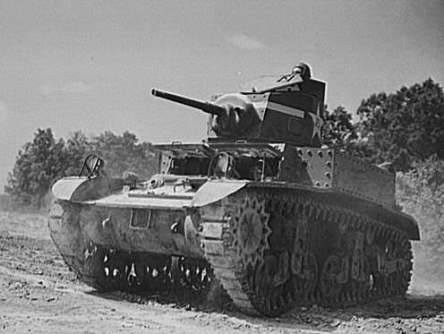
M3 Stuart
Antes de la entrada de Estados Unidos en la guerra se suministró a las fuerzas británicas y de la Commonwealth en régimen de préstamo y arriendo, donde recibió el nombre de Stuart en honor del general confederado de la guerra civil estadounidense J. E. B. Stuart. Se utilizaron por primera vez en combate en la Campaña del Norte de África, en la cual unos 170 fueron utilizados por las fuerzas británicas para la Operación Crusader a finales de año. A partir de entonces, fue utilizado por las fuerzas estadounidenses y de los demás Aliados. Fue el primer modelo de carro de combate tripulado por estadounidenses de la Segunda Guerra Mundial en enfrentarse al enemigo en un combate acorazado cuando se usaron en Filipinas en diciembre de 1941 contra los japoneses.
- Tipo: Tanque ligero.
- Compañía: American Car & Foundry Co.
- Tripulación: 4 (conductor, asistente de conductor, artillero y comandante).
- Dimenciones: Longitud 4,53 m, Anchura 2,24 m, Altura 2,39 m.
- Peso: Peso 12,7 t.
- Velocidad: 58 km/h.
- Armamento: Arma primaria Cañón de 37 mm M5/M6 con 103-106 proyectiles, arma secundaria 3-5 ametralladoras M1919A4.
- Armadura: Frente del casco: 44 mm, frente de la torreta: 38 mm , lado del casco: 25 mm, lado de la torreta: 25 mm.
- Variantes: M3, M3 diesel, M3A1, M3A1 diesel, M3A3, M5, M5A1.
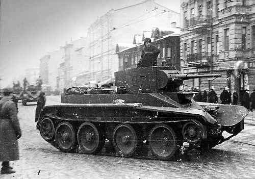
BT-7
Fue producido en distintas variantes y en grandes cantidades entre 1935 y 1941. Se trataba de un modelo con un nuevo casco parcialmente soldado, y ligeramente más grande que el de sus antecesores, provisto de un nuevo motor más potente y fiable. Este propulsor fue el Mikulin M-17T de gasolina, aunque más adelante también se creó en una versión diésel incorporando el Járkov V-2, el que es convertiría en el motor universal de los blindados soviéticos de la Segunda Guerra Mundial.
- Tipo: Tanque de caballería.
- Compañía: KhPZ en Járkov.
- Tripulación: 3 (comandante, cargador, conductor).
- Dimenciones: Longitud 5,66 m, Anchura 2,29 m, Altura 2,42 m.
- Peso: Peso 13,8 t.
- Velocidad: 62-86 km/h.
- Armamento: Arma primaria Cañón de 45 mm Mod. 1934/38 (20-K) o Obús KT-28 de 76,2 mm, arma secundaria 1-3 ametralladoras DT.
- Armadura: Frente del casco: 22 mm, frente de la torreta: 15 mm , lado del casco: 13 mm, lado de la torreta: 13 mm.
- Variantes: Mod. 35, Mod. 37, BT-7M, BT-7A..
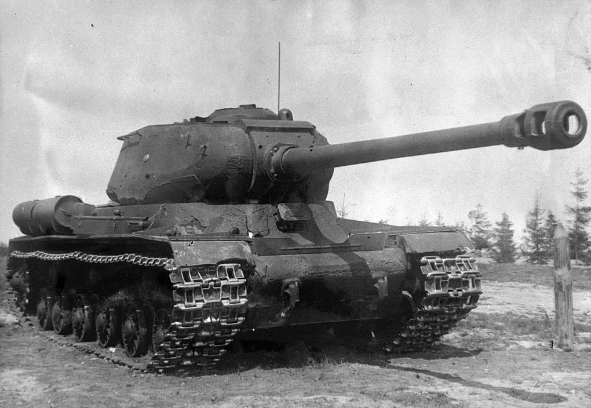
IS-2
El IS-2, o Iósif Stalin-2 en honor al líder soviético Iósif Stalin, fue un tanque pesado soviético creado durante la Segunda Guerra Mundial como tanque de ruptura. Su primera acción fue en febrero de 1944 en la Batalla de Korsun-Cherkasy y fue ampliamente utilizado por el Ejército Rojo durante la etapa final de la guerra.
- Tipo: Tanque pesado.
- Compañía: Zhozef Kotin, Nikolay Dukhov.
- Tripulación: 4 (comandante/operador de radio, artillero, cargador, conductor).
- Dimenciones: Longitud 9,90 m, Anchura 3,09 m, Altura 2,73 m.
- Peso: Peso 46 t, 53 t (completamente cargado).
- Velocidad: 37 km/h.
- Armamento: Arma primaria Cañón D-25T de 122 mm Arma secundaria 3 x ametralladoras DT de 7,62 mm más 1 x ametralladora DShK de 12,7mm.
- Armadura: Frente del casco: 100 mm en un ángulo de 60°, glacis inferior: 100 mm en un ángulo de 30°, frente de la torreta: 100 mm (redondeado), mantelete: 120 mm (redondeado), lado del casco: 90-130 mm en 9-25 °, lado de la torreta: 90 mm en un ángulo de 20°.
- Variantes: IS-2, IS-2M.
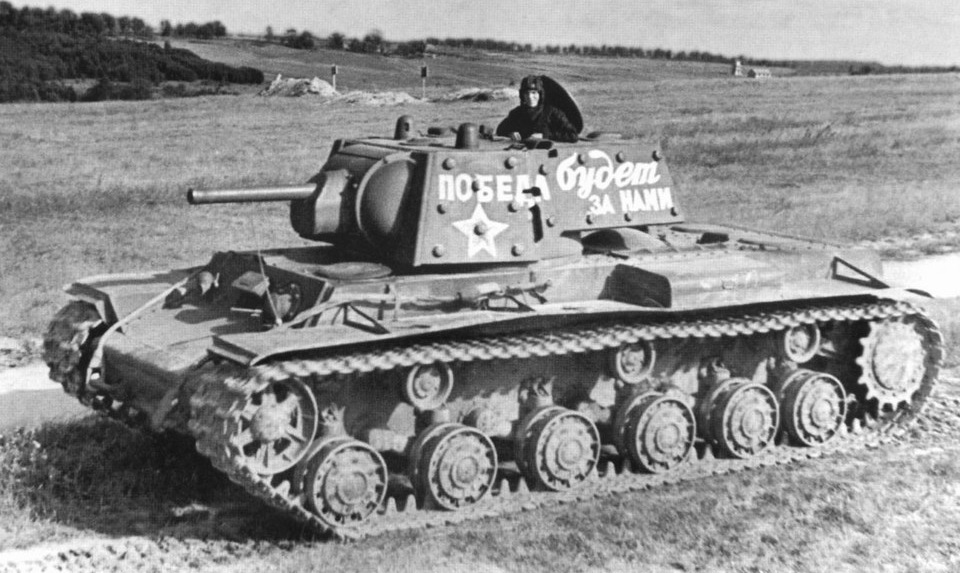
KV-1
El KV-1 fue el primer tanque pesado de la serie de vehículos de combate pesados Kliment Voroshilov desarrollados en la Unión Soviética durante la Segunda Guerra Mundial. Los carros KV-1 eran conocidos por su gruesa protección blindada durante las primeras etapas de la guerra, especialmente durante el primer año de la invasión alemana de la Unión Soviética. Aunque en pequeño número, en ciertas situaciones, incluso un solo KV-1 apoyado por infantería podía detener grandes formaciones alemanas. Esto hizo que recibiera el apodo de "Russischer Koloss" ("Coloso ruso"), ya que era prácticamente inmune a los cañones anticarro de 37 mm y a las primeras versiones de Panzer III y Panzer IV desplegados por el Ejército Alemán en la Operación Barbarroja.
- Tipo: Tanque pesado.
- Compañía: LKZ / Fábrica Kírov N.º 100 (Leningrado / Cheliábinsk) y ChKZ (Cheliábinsk).
- Tripulación: 5 (comandante, operador de radio, artillero, cargador, conductor).
- Dimenciones: Longitud 6,75 m, Anchura 3,32 m, Altura 2,71 m.
- Peso: Peso 43,5 t.
- Velocidad: 30-40 km/h.
- Armamento: Arma primaria Cañón de 76,2 mm L-11, F-32 o ZiS-5, arma secundaria 3 ametralladoras DT de 7,62 mm.
- Armadura: Frente del casco: 40 mm en un ángulo de 60°, frente de la torreta: 75 mm, lado del casco: 75 mm, lado de la torreta: 75 mm.
- Variantes: KV-1A, KV-1E, KV-1B, KV-1C, KV-1S.
Tanques de Alemania

Dicker Max
El 10,5 cm K gepanzerte Selbstfahrlafette, abreviado 10,5 cm K (gp.Sfl.), llamado Panzer Selbstfahrlafette IV Ausf. A (Pz.Sfl. IVa) durante su desarrollo y apodado coloquialmente como "Dicker Max" ("El gordo Max"), fue un prototipo de cañón autopropulsado alemán concebido inicialmente en 1939 como un destructor de búnkers para emplear contra las defensas de la Línea Maginot francesa. Estaba basado en un chasis derivado del Panzer IV y armado con un cañón pesado 10,5 cm schwere Kanone 18.
- Tipo: Cazacarros pesado.
- Compañía: Krupp.
- Tripulación: 5 (conductor, comandante, artillero, 2 cargadores).
- Dimenciones: Longitud 5,8 m, Anchura 2,86 m, Altura 2,53 m.
- Peso: Peso 22 t.
- Velocidad: 27 km/h.
- Armamento: Arma primaria Cañón 10,5 cm sK 18.
- Armadura: Frente del casco: 50 mm, frente de la torreta: 30 mm, mantelete: 120 mm, lado del casco: 20 mm, lado de la torreta: 20 mm.
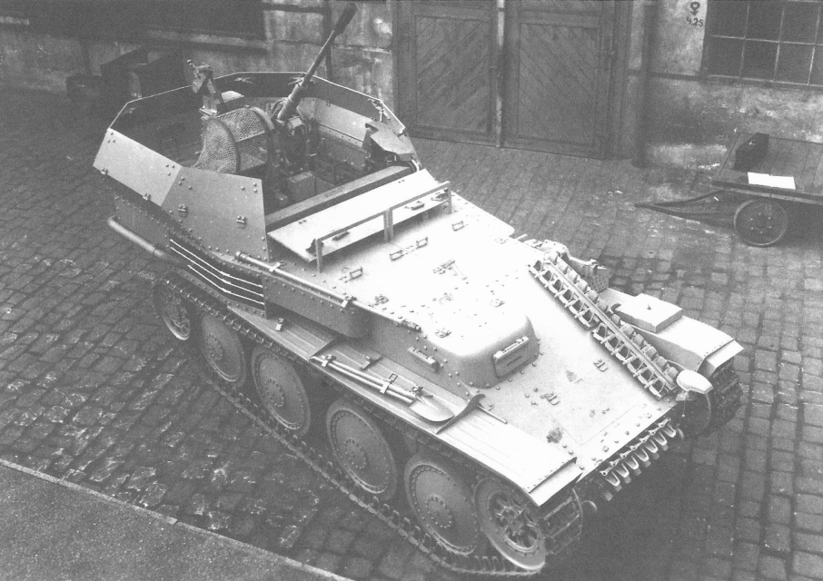
Flakpanzer 38(t)
El Flakpanzer 38(t), nombrado oficialmente 2 cm FlaK 38 auf Geschützwagen 38(t) Ausf. M y numerado Sd.Kfz. 140 por la Oficina de Armamento del Ejército Alemán, fue un vehículo blindado antiaéreo usado en las divisiones Panzer alemanas entre 1944 y 1945 para protegerse de los cazabombarderos de los Aliados, especialmente en el Frente Occidental. Consistía en un chasis derivado del Panzer 38(t) armado con un cañón automático de 20 mm.
- Tipo: Artillería antiaérea autopropulsada.
- Compañía: BMM.
- Tripulación: 4 (comandante/operador de radio, artillero, cargador, conductor).
- Dimenciones: Longitud 4,61 m, Anchura 2,15 m, Altura 2,25 m.
- Peso: Peso 9,8 t.
- Velocidad: 42 km/h.
- Armamento: Arma primaria Cañón 2 cm FlaK 38 con 1.040 proyectiles.
- Armadura: Frente del casco: 15 mm, frente del escudo: 15 mm, lado del casco: 15 mm, lado del escudo: 10 mm.
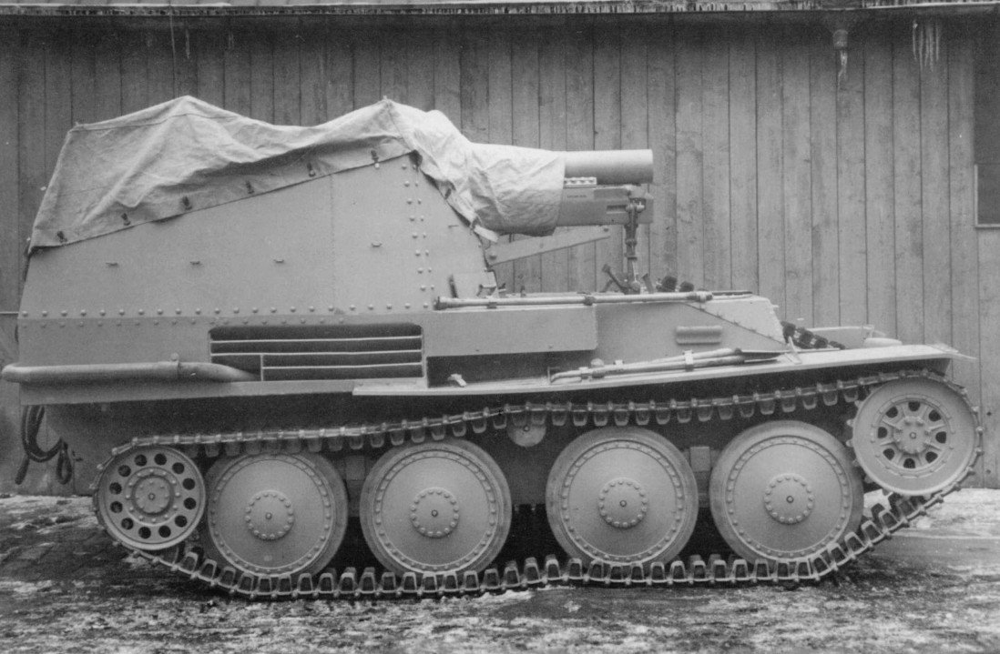
Grille
El Sturmpanzer 38(t) Grille ("grillo") fue un cañón autopropulsado de calibre 150 mm fabricado en Checoslovaquia entre 1943 y 1945 para el Ejército Alemán con el chasis del carro ligero checo Panzer 38(t) y el cañón pesado 15 cm sIG 33 alemán. Se construyó en dos versiones distintas de chasis: el Ausf. H usaba un chasis similar al carro ligero en el que se sustituía la superestructura por un compartimento semiabierto que albergaba el voluminoso cañón y a toda la tripulación; y por otra parte, el Ausf. M/K empleaba un nuevo chasis creado especialmente para el montaje de cañones autopropulsados, este disponía de motor central y un compartimento de combate trasero más eficiente.
- Tipo: Cañón autopropulsado.
- Compañía: BMM.
- Tripulación: 4 (comandante/operador de radio, artillero, cargador, conductor).
- Dimenciones: Longitud 4,95 m, Anchura 2,15 m, Altura 2,4 m.
- Peso: Peso 11,5 t.
- Velocidad: 35 km/h.
- Armamento: Arma primaria Cañón pesado 15 cm sIG 33, arma secundaria ametralladora MG 42.
- Armadura: Frente del casco: 50 mm, frente de la torreta: 25 mm (redondeado), lado del casco: 15 mm, lado de la torreta: 15 mm.
- Variantes: Ausf. H, Ausf. M/K.
Tanques de Japón
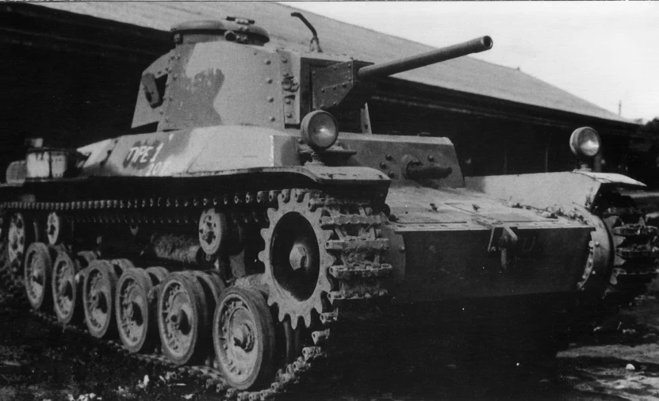
Tipo 1 Chi-He
Se trata de una versión mejorada del Tipo 97 Chi-Ha. Tenía un cañón principal más potente, un motor más capaz y un blindaje más grueso. Fue el primer tanque japonés en tener equipo de radio como medio de comunicación estándar. La producción del tanque no comenzó hasta 1943, debido a la mayor prioridad que se le daba en la asignación del acero a la Armada Imperial para la construcción de buques de guerra. Se construyeron un total de 170 unidades que se asignaron a la defensa de las islas japonesas contra la previsible invasión de los Aliados.
- Tipo: Tanque mediano.
- Compañía: Mitsubishi J, Sagami RZ.
- Tripulación: 5 (comandante, artillero, cargador, conductor, ametralldor).
- Dimenciones: Longitud 5,5 m, Anchura 2,2 m, Altura 2,38 m.
- Peso: Peso 17,2 t,.
- Velocidad: 44 km/h.
- Armamento: Arma primaria Cañón de 47 mm Tipo 1, arma secundaria 2 ametralladoras de 7,7 mm Tipo 97.
- Armadura: Frente de la torreta: 50 mm.

Tipo 1 Ho-Ni I
Tuvo una acción de combate limitada y se desplegó por primera vez en la Batalla de Luzón en Filipinas en 1945. Hubo variantes mejoradas conocidas como Ho-Ni II y Ho-Ni III. Los tres modelos se produjeron en cantidades limitadas.
- Tipo: Cazacarros.
- Compañía: Hitachi.
- Tripulación: 3 (comandante, artillero, conductor).
- Dimenciones: Longitud 5,9 m, Anchura 2,29 m, Altura 2,39 m.
- Peso: Peso 15,4 t.
- Velocidad: 38 km/h.
- Armamento: Arma primaria Cañón de 75 mm Tipo 90.
- Armadura: Frente del casco: 16 mm, frente de la torreta: 51 mm, lado del casco: 9 mm.
- Variantes: Ho-Ni II, Ho-Ni III.
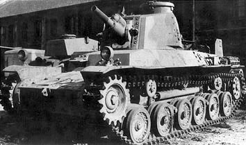
Tipo 2 Ho-I
fue un carro de apoyo japonés de la Segunda Guerra Mundial derivado del tanque medio Tipo 1 Chi-He. En concepto, era similar a las primeras versiones del Panzer IV de cañón corto alemán, ya que fue diseñado como un obús autopropulsado destinado a proporcionar fuego de apoyo cercano. Con su cañón corto de 75 mm disponía de una mayor potencia de fuego de alto explosivo contra fortificaciones y cañones antitanque enemigos que otros modelos de tanques.
- Tipo: Tanque de infantería.
- Compañía: Mitsubishi.
- Tripulación: 4 (comandante, artillero, cargador, conductor).
- Dimenciones: Longitud 5,73 m, Anchura 2,33 m, Altura 2,58 m.
- Peso: Peso 16,1 t.
- Velocidad: 44 km/h.
- Armamento: Arma primaria Cañón de 75 mm Tipo 99, arma secundaria Ametralladora de 7,7 mm Tipo 97.
- Armadura: Frente del casco: 26 mm, frente de la torreta: 40 mm.